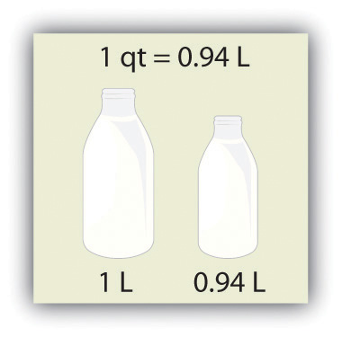

A number indicates “how much,” but the unit indicates “of what.” The “of what” is important when communicating a quantity. For example, if you were to ask a friend how close you are to Lake Erie and your friend says “six,” then your friend isn’t giving you complete information. Six what? Six miles? Six inches? Six city blocks? The actual distance to the lake depends on what units you use.
Chemistry, like most sciences, uses the International System of Units, or SI for short. (The letters SI stand for the French “le Système International d’unités.”) SI specifies certain units for various types of quantities, based on seven fundamental unitsOne of the seven basic units of SI used in science. for various quantities. We will use most of the fundamental units in chemistry. Initially, we will deal with three fundamental units. The meter (m) is the SI unit of length. It is a little longer than a yard (see Figure 2.3 "The Meter"). The SI unit of mass is the kilogram (kg), which is about 2.2 pounds (lb). The SI unit of time is the second (s).
Figure 2.3 The Meter

The SI standard unit of length, the meter, is a little longer than a yard.
To express a quantity, you need to combine a number with a unit. If you have a length that is 2.4 m, then you express that length as simply 2.4 m. A time of 15,000 s can be expressed as 1.5 × 104 s in scientific notation.
Sometimes, a given unit is not an appropriate size to easily express a quantity. For example, the width of a human hair is very small, and it doesn’t make much sense to express it in meters. SI also defines a series of numerical prefixesA prefix used with a unit that refers to a multiple or fraction of a fundamental unit to make a more conveniently sized unit for a specific quantity. that refer to multiples or fractions of a fundamental unit to make a unit more conveniently sized for a specific quantity. Table 2.1 "Multiplicative Prefixes for SI Units" lists the prefixes, their abbreviations, and their multiplicative factors. Some of the prefixes, such as kilo-, mega-, and giga-, represent more than one of the fundamental unit, while other prefixes, such as centi-, milli-, and micro-, represent fractions of the original unit. Note, too, that once again we are using powers of 10. Each prefix is a multiple of or fraction of a power of 10.
Table 2.1 Multiplicative Prefixes for SI Units
| Prefix | Abbreviation | Multiplicative Amount |
|---|---|---|
| giga- | G | 1,000,000,000 × |
| mega- | M | 1,000,000 × |
| kilo- | k | 1,000 × |
| deci- | d | 1/10 × |
| centi- | c | 1/100 × |
| milli- | m | 1/1,000 × |
| micro- | μ* | 1/1,000,000 × |
| nano- | n | 1/1,000,000,000 × |
| pico- | p | 1/1,000,000,000,000 × |
| * The letter μ is the Greek letter lowercase equivalent to an m and is called “mu” (pronounced “myoo”). | ||
To use the fractions to generate new units, simply combine the prefix with the unit itself; the abbreviation for the new unit is the combination of the abbreviation for the prefix and the abbreviation of the unit. For example, the kilometer (km) is 1,000 × meter, or 1,000 m. Thus, 5 kilometers (5 km) is equal to 5,000 m. Similarly, a millisecond (ms) is 1/1,000 × second, or one-thousandth of a second. Thus, 25 ms is 25 thousandths of a second. You will need to become proficient in combining prefixes and units. (You may recognize that one of our fundamental units, the kilogram, automatically has a prefix-unit combination, the kilogram. The word kilogram means 1,000 g.)
In addition to the fundamental units, SI also allows for derived unitsA unit that is a product or a quotient of a fundamental unit. based on a fundamental unit or units. There are many derived units used in science. For example, the derived unit for area comes from the idea that area is defined as width times height. Because both width and height are lengths, they both have the fundamental unit of meter, so the unit of area is meter × meter, or meter2 (m2). This is sometimes spoken as “square meters.” A unit with a prefix can also be used to derive a unit for area, so we can also have cm2, mm2, or km2 as acceptable units for area.
Volume is defined as length times width times height, so it has units of meter × meter × meter or meter3 (m3), sometimes spoken as “cubic meters.” The cubic meter is a rather large unit, however, so another unit is defined that is somewhat more manageable: the liter (L). A liter is 1/1,000th of a cubic meter and is a little more than 1 quart in volume (see Figure 2.4 "The Liter"). Prefixes can also be used with the liter unit, so we can speak of milliliters (1/1,000th of a liter; mL) and kiloliters (1,000 L; kL).
Figure 2.4 The Liter
The SI unit of volume, the liter, is slightly larger than 1 quart.
Another definition of a liter is one-tenth of a meter cubed. Because one-tenth of a meter is 10 cm, then a liter is equal to 1,000 cm3 (Figure 2.5 "The Size of 1 Liter"). Because 1 L equals 1,000 mL, we conclude that 1 mL equals 1 cm3; thus, these units are interchangeable.
Figure 2.5 The Size of 1 Liter

One liter equals 1,000 cm3, so 1 cm3 is the same as 1 mL.
Units not only are multiplied together but also can be divided. For example, if you are traveling at one meter for every second of time elapsed, your velocity is 1 meter per second, or 1 m/s. The word per implies division, so velocity is determined by dividing a distance quantity by a time quantity. Other units for velocity include kilometers per hour (km/h) or even micrometers per nanosecond (μm/ns). Later, we will see other derived units that can be expressed as fractions.
Solution
Test Yourself
Answers
Identify the unit in each quantity.
Identify the unit in each quantity.
Identify the unit in each quantity.
Identify the unit in each quantity.
Indicate what multiplier each prefix represents.
Indicate what multiplier each prefix represents.
Give the prefix that represents each multiplier.
Give the prefix that represents each multiplier.
Complete the following table with the missing information.
| Unit | Abbreviation |
|---|---|
| kilosecond | |
| mL | |
| Mg | |
| centimeter |
Complete the following table with the missing information.
| Unit | Abbreviation |
|---|---|
| kilometer per second | |
| second | |
| cm3 | |
| μL | |
| nanosecond |
Express each quantity in a more appropriate unit. There may be more than one acceptable answer.
Express each quantity in a more appropriate unit. There may be more than one acceptable answer.
Express each quantity in a more appropriate unit. There may be more than one acceptable answer.
Express each quantity in a more appropriate unit. There may be more than one acceptable answer.
Multiplicative prefixes are used for other units as well, such as computer memory. The basic unit of computer memory is the byte (b). What is the unit for one million bytes?
You may have heard the terms microscale or nanoscale to represent the sizes of small objects. What units of length do you think are useful at these scales? What fractions of the fundamental unit of length are these units?
Acceleration is defined as a change in velocity per time. Propose a unit for acceleration in terms of the fundamental SI units.
Density is defined as the mass of an object divided by its volume. Propose a unit of density in terms of the fundamental SI units.
| Unit | Abbreviation |
|---|---|
| kilosecond | ks |
| milliliter | mL |
| megagram | Mg |
| centimeter | cm |
megabytes (Mb)
meters/second2